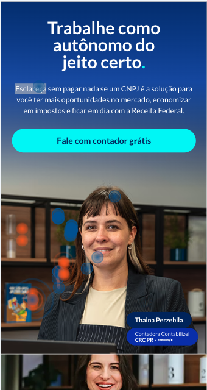
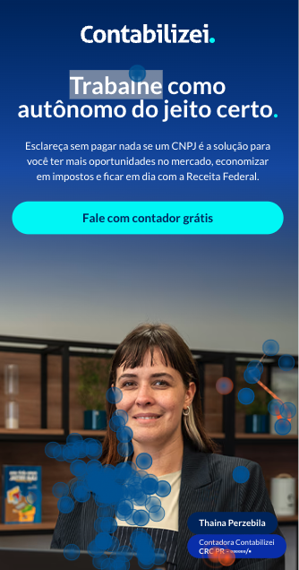
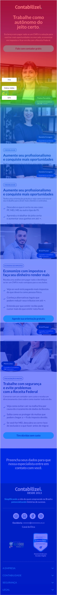
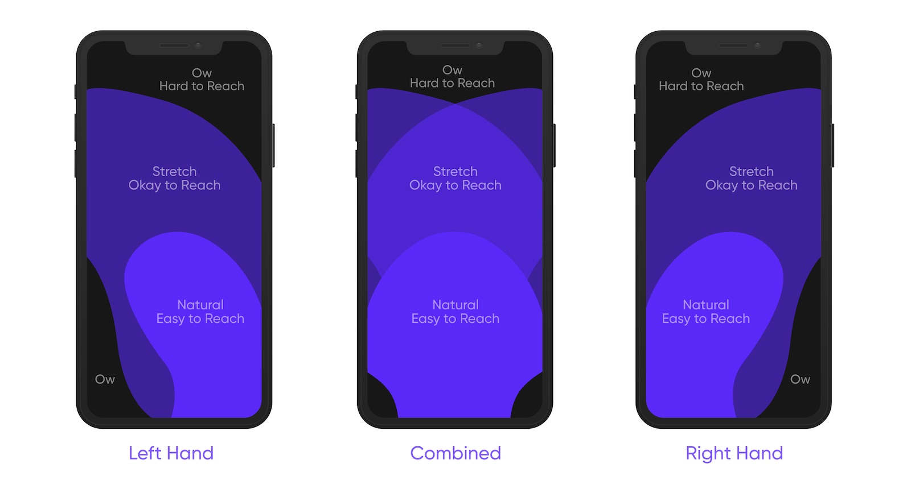

Componentes da Home SP
A página da Home SP serviu de referência. Reaproveitar os componentes dela garantiu consistência, agilizou a entrega e aumentou a chance de bom desempenho.
O objetivo é capturar leads para o serviço de assessoria contábil da Contabilizei, com foco em profissionais autônomos.
A LP Formalizar já estava no ar havia alguns meses e, com base no time de negócios, era preciso um redesign de copy e de layout.
Gravações de sessão e mapas de calor do Microsoft Clarity, somados a uma análise heurística e a uma matriz de objeções, levantaram cinco hipóteses.



97% das pessoas acessavam pelo celular, mas o layout tinha sido pensado para telas grandes.
A foto da Thayna concentrava muitos dead clicks e rage clicks, mais que o texto e o botão.
Pelo princípio da affordance, o caption tinha cara de elemento clicável e também recebia dead e rage clicks.
Além de travar, mesmo funcionando como previsto elas cobriam parte do conteúdo, inclusive os CTAs para o formulário.
Só 3,17% das pessoas rolavam até a seção do formulário.
Avaliei a LP antiga com as 10 heurísticas de Nielsen. Oito se aplicavam, e cinco problemas tiveram severidade alta na escala de 0 a 4.
ProblemaO feedback visual do preenchimento do formulário era muito discreto.
OndeFormulário acima do footer
SoluçãoUsar o formulário nativo do Framer e melhorar o feedback visual, com um ícone mais apropriado e uma copy melhor.
ProblemaA página não falava a língua do usuário: a palavra “autônomo” na hero e termos técnicos ao longo do texto.
OndeHero e a página como um todo
SoluçãoTirar “autônomo” da hero e revisar a copy inteira, sem termos como CNAE, Receita Federal e Simples Nacional (CNPJ, com cuidado).
ProblemaParcialmente aplicável: pelas gravações, as animações atrapalhavam o objetivo principal, que é preencher o formulário.
OndeSegunda, terceira e quarta dobras
SoluçãoRetirar as animações ou trocá-las por elementos mais simples.
ProblemaVários CTAs com textos diferentes levavam à mesma ação, sugerindo resultados diferentes para o mesmo clique.
OndeHero e as três seções seguintes
SoluçãoPadronizar os CTAs, com no máximo duas variações.
ProblemaO formulário do HubSpot tinha placeholders pouco claros, e o caption parecia clicável sem ser.
OndeFormulário no fim da página e captions
SoluçãoFormulário nativo do Framer com placeholders melhores e um caption que não pareça botão.
ProblemaTextos diferentes para a mesma ação aumentavam o esforço cognitivo, e as animações escondiam parte das opções.
OndeDobras com animações
SoluçãoPadronizar os CTAs e evitar animações que cubram o conteúdo.
ProblemaParcialmente aplicável: o público das campanhas tem maturidade parecida. O ponto é a solução funcionar bem em todos os dispositivos, principalmente no celular.
OndePágina toda, no celular
SoluçãoLayout mobile first.
ProblemaAnimações travavam e cobriam os CTAs, e elementos no fundo da foto da Thayna recebiam cliques.
OndeAnimações e foto da hero
SoluçãoRemover as animações ou trocá-las por outras mais simples, e limpar o fundo da hero.
ProblemaNão se aplica a esta página.
Onde—
Solução—
ProblemaNão havia FAQ para responder às objeções dos clientes.
OndeAntes do footer
SoluçãoIncluir um FAQ acima do footer.
Usei o material da Nielsen Norman Group sobre como as pessoas seguram o celular (só a mão esquerda, as duas mãos ou só a direita). Também defini um viewport de 550 px, para que a primeira dobra apareça inteira para a maior parte dos usuários.

A página da Home SP serviu de referência. Reaproveitar os componentes dela garantiu consistência, agilizou a entrega e aumentou a chance de bom desempenho.
As páginas atuais pareciam espremidas. Usei o PicPay como referência de espaçamento e de bom uso de white space.
Mais fluidez entre os elementos da página, seguindo o princípio da continuidade da Gestalt.
Para garantir um bom LCP, a foto da Thayna ficou menor, o que também reduz a atenção que ela roubava do CTA. As imagens deixaram de ser superdimensionadas.
Mobile first, com o formulário mais perto do topo e sem animações que não contribuíam para a navegação da página.
A principal métrica de sucesso é a conversão de usuário em contato pelo formulário.
Veja outros trabalhos ou vamos conversar sobre o seu.